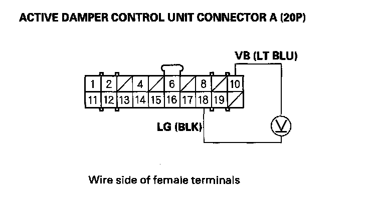

DTC 6-9
DTC 6-9: Active Damper Control Unit Power Source Circuit (+B) Low Voltage1. Turn the ignition switch ON (II).
2. Clear the DTC with the HDS.
3. Turn the ignition switch OFF.
4. Start the engine, and wait 5 seconds.
5. Check for DTCs with the HDS.
Is DTC 6-9 indicated?
YES - Go to step 6.
NO - Intermittent failure at this time. Check for poor or loose connections between the main under-hood fuse box and the active damper control unit. Check for a loose or poor ground at G302 and G401.
6. Turn the ignition switch OFF.
7. Check the No. 5 (30 A) fuse in the main under-hood fuse box.
Is the fuse blown?
YES - Check for short to ground in the LT BLU wire between the main under-hood fuse box and the active damper control unit, then replace the fuse.
NO - Reinstall the fuse, then go to step 8.
8. Measure voltage between active damper control unit connector A (20P) terminals No. 10 and No 18.

Is there battery voltage?
YES - Replace the active damper control unit then go to step 9.
NO - Repair open in the wire between the active damper control unit and the No. 5 (30 A) fuse in the main under-hood fuse box, or an open or poor connection between active damper control unit connector A terminal No. 18 and body ground (G302) then go to step 9.
9. Turn the ignition switch ON (II).
10. Clear the DTC with the HDS.
11. Start the engine.
12. Do the DAMPER FORCE OPERATION in the ACTIVE DAMPER SYSTEM INSPECTION MENU with the HDS.
13. Check for DTCs with the HDS.
Is any DTC indicated?
YES - Go to the indicated DTC's troubleshooting.
NO - Troubleshooting is complete.